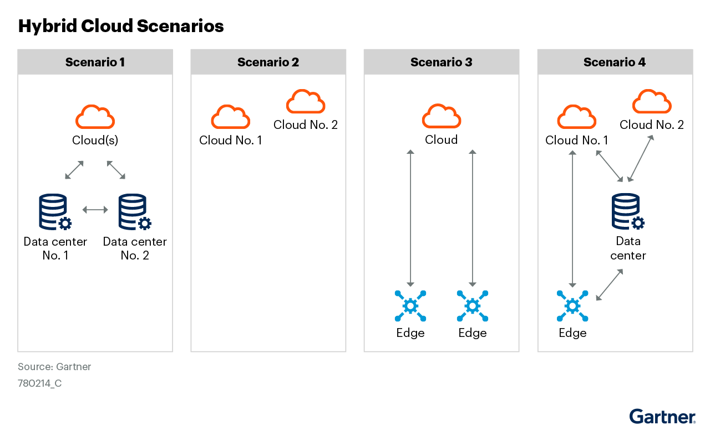
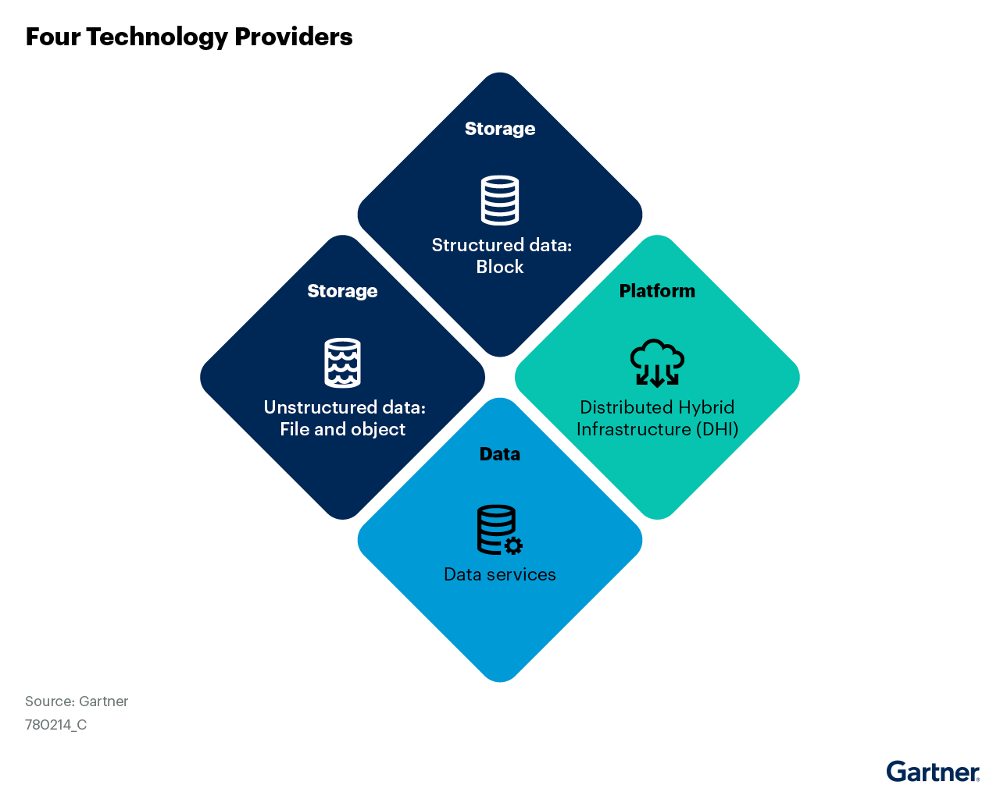

선택 기준은 저장 용량보다 연결성과 데이터 서비스로 옮겨가고 있다. 하이브리드 클라우드 스토리지는 AI 워크로드를 위해 퍼블릭 클라우드와 온프레미스를 함께 엮는 방향으로 빠르게 진화 중이다.
핵심 요약
전략 계획 가정 Strategic Planning Assumption
2029년까지 I&O 책임자의 72%가 하이브리드 클라우드 스토리지hybrid cloud storage — 온프레미스, 엣지, 퍼블릭 클라우드에 걸쳐 저장소와 데이터 서비스를 끊김 없이 쓰게 하는 방식. 활용 사례를 최소 두 개 구현할 것이다. 2026년의 33%에서 크게 늘어난 수치다. 2029년까지 기업이 관리하는 데이터의 50% 초과가 데이터센터나 클라우드 밖에서 생성되고 처리될 것이다. 2026년의 27%에서 크게 늘어난 수치다.
하이브리드 클라우드 스토리지는 이제 전통적 저장소 용도를 넘어서고 있다. 분석, 사이버 복원력cyber resilience — 공격이나 장애가 생겨도 데이터를 보호하고 복구하는 능력., 수명주기 관리, 데이터 이동 같은 기능이 함께 붙는다. I&O 책임자는 재해 복구, 용량 버스팅, 저장소 표준화, 확장형 인프라에 우선 투자하는 경우가 많다.
문제 맥락
하이브리드 클라우드 스토리지는 서로 다른 데이터센터, 코로케이션, 엣지, 퍼블릭 클라우드에 걸쳐 데이터 서비스를 이어 주는 시장이다. 구현 방식은 분산형 하이브리드 인프라, 하이브리드 클라우드 스토리지 플랫폼, 데이터 전송 장비, 하이퍼컨버지드, 스토리지 어레이, SDS, 데이터 관리 소프트웨어까지 넓다. 핵심은 한 배치 위치 안이 아니라 퍼블릭 클라우드와 온프레미스on-premises — 사내 데이터센터나 자체 시설에 시스템을 두고 운영하는 방식. 사이를 포함해 여러 환경에서 저장소와 데이터 서비스를 제공하는 능력이다. 온프레미스, 엣지, 클라우드 전반에서 재해 복구, 용량 버스팅, 처리 버스팅, 글로벌 데이터 접근, 표준화된 스토리지 제공, 데이터 전송과 엣지 데이터 서비스 중 하나 이상을 지원해야 한다. 흔한 기능으로는 지능형 데이터 티어링, 글로벌 네임스페이스global namespace — 여러 저장 위치의 데이터를 하나의 논리적 공간처럼 보이게 하는 기능., 데이터 마이그레이션, 데이터 동기화, 글로벌 메타데이터 관리가 있다.
영향
기업은 성능, 컴플라이언스, 확장성을 함께 맞추는 아키텍처를 우선하기 시작했다. 데이터 양이 급증하고 AI 기반 워크로드가 늘면서 수요도 빠르게 커진다. 시장 전망치는 2025년 801억달러에서 2035년 2,696억달러로 늘고, 연평균 성장률은 12.9%다. I&O 책임자는 민감한 데이터는 온프레미스나 요구 지역의 프라이빗 클라우드에 두고, 덜 민감한 확장형 워크로드는 퍼블릭 클라우드로 보내 데이터 주권 요구를 맞출 수 있다. AI와 생성형 AI에도 이 구조가 중요하다. 데이터 준비, 통합, 학습, 추론 전 과정에서 온프레미스와 클라우드의 데이터를 이어 쓰게 하고, 지연을 줄이며 보안과 컴플라이언스 요구를 함께 맞추기 때문이다.

크게 보기Four hybrid cloud scenarios are shown: data centers connected to clouds, multiple clouds, cloud-to-edge, and multi-cloud with data center and edge. Each scenario highlights different integration points for cloud, edge, and data center resources.
Four hybrid cloud scenarios are shown: data centers connected to clouds, multiple clouds, cloud-to-edge, and multi-cloud with data center and edge. Each scenario highlights different integration points for cloud, edge, and data center resources.
닫기
크게 보기In the hybrid cloud storage market, there are four groups of vendors. These include distributed hybrid infrastructure players, data services, unstructured data: file and object, and structured data: block. Each vendor group brings unique strengths and perspectives to the market.
In the hybrid cloud storage market, there are four groups of vendors. These include distributed hybrid infrastructure players, data services, unstructured data: file and object, and structured data: block. Each vendor group brings unique strengths and perspectives to the market.
닫기시사점
온프레미스의 AI 워크플로와 데이터 유형 가운데 무엇이 하이브리드 스토리지에 가장 잘 맞는지 먼저 가려야 한다. 구매 판단은 그 결과를 기준으로 내려야 한다. 퍼블릭 클라우드의 AI 애플리케이션과 데이터 파이프라인을 염두에 두고, 클라우드 네이티브 데이터 접근을 제공하는 제품을 우선해야 한다. 공급자 평가는 메타데이터 인사이트, 사이버스토리지, 글로벌 접근, 수명주기 관리, 멀티클라우드 지원, 성능 가속, 데이터 분석, 끊김 없는 데이터 이동을 제공하는지로 해야 한다.